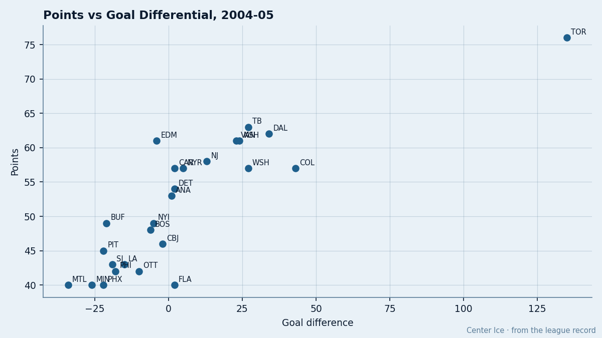

61 Points on a Minus Four: How Overtime Builds a Contender That Doesn't Exist
Strip every overtime game from the standings and 3 clubs in a playoff line fall apart. The method: remove all OT results, recompute pace over 82, and rank the West.
 Doug ReimerAnalytics editor, ex-video coach · The Slot Report
Doug ReimerAnalytics editor, ex-video coach · The Slot Report
The piece
 Edmonton Oilers has 61 points. The goal differential is -4. No other club with 60 or more points has a negative one. The gap between what the standings say about Edmonton and what the goal differential says is the largest in the conference, and the mechanism is overtime: 9 wins and 3 losses in the extra period, 21 points earned in 12 OT games, 34.4% of the total.
Edmonton Oilers has 61 points. The goal differential is -4. No other club with 60 or more points has a negative one. The gap between what the standings say about Edmonton and what the goal differential says is the largest in the conference, and the mechanism is overtime: 9 wins and 3 losses in the extra period, 21 points earned in 12 OT games, 34.4% of the total.
I stripped every overtime game from the standings, counted only regulation points, divided by games played minus OT games, and multiplied by 82. That gives a regulation pace. Compare it to the current pace and the OT bump is the difference. Three clubs in the West's top five carry a bump above 12 points per 82.
Three clubs built on the extra period
EDM's OT record is 9-3. That is a .750 win rate in the extra period, the best of any club with at least 10 OT appearances. In regulation they are 20-14, a .588 clip. The 9 OT wins produce 21 extra points. Strip them and the regulation pace drops to 96.5 per 82, against a current pace of 108.7. The OT bump is 12.3 points per 82.
 Columbus Blue Jackets is the more extreme case. A 7-2 OT record produces 16 of their 46 points, 34.8% of the total. Regulation pace: 68.3 per 82. Current pace: 83.8. The OT bump is 15.5 points per 82, the second-largest in the conference behind only
Columbus Blue Jackets is the more extreme case. A 7-2 OT record produces 16 of their 46 points, 34.8% of the total. Regulation pace: 68.3 per 82. Current pace: 83.8. The OT bump is 15.5 points per 82, the second-largest in the conference behind only  St. Louis Blues at 18.4. CBJ sits 8th in the West. Strip the OT and they sit behind
St. Louis Blues at 18.4. CBJ sits 8th in the West. Strip the OT and they sit behind  Phoenix Coyotes and
Phoenix Coyotes and  San Jose Sharks by regulation pace.
San Jose Sharks by regulation pace.
 Carolina Hurricanes is the most OT-dependent club in either conference's top 8. 8-9 in OT gives them 25 points from overtime, 43.9% of their total. The goal differential is +2. Regulation pace: 90.5 per 82. Current pace: 101.6. The bump is 11.1. The 6th-place seat in the East is built on 17 OT games.
Carolina Hurricanes is the most OT-dependent club in either conference's top 8. 8-9 in OT gives them 25 points from overtime, 43.9% of their total. The goal differential is +2. Regulation pace: 90.5 per 82. Current pace: 101.6. The bump is 11.1. The 6th-place seat in the East is built on 17 OT games.

What 61 points looks like when the overtime is gone
Three clubs sit at 61 points in the West. The regulation pace separates them into different sports.
| Club | Pts | Diff | OT record | Pts from OT | % from OT | Reg pace | Cur pace | Bump |
|---|---|---|---|---|---|---|---|---|
| Edmonton Oilers | 61 | -4 | 9-3 | 21 | 34.4% | 96.5 | 108.7 | 12.3 |
 Nashville Predators Nashville Predators | 61 | +24 | 3-5 | 11 | 18.0% | 110.8 | 111.2 | 0.3 |
 Vancouver Canucks Vancouver Canucks | 61 | +23 | 3-5 | 11 | 18.0% | 107.9 | 108.7 | 0.8 |
Nashville Predators and Vancouver Canucks earn 18.0% of their points from overtime. Their regulation pace is 110.8 and 107.9, both above their current pace in the case of Nashville and within 0.8 in Vancouver's. Edmonton's regulation pace is 96.5. Nashville and Vancouver are genuinely 61-point teams. Edmonton is a 96.5-pace team wearing a 108.7-pace costume.
The flip side: clubs that don't win close ones
 Colorado Avalanche has 57 points and a +43 differential. Their OT record is 3-3, producing only 9 OT points, 15.8% of the total. They appear in only 6 OT games out of 45, tied for the fewest in the conference with
Colorado Avalanche has 57 points and a +43 differential. Their OT record is 3-3, producing only 9 OT points, 15.8% of the total. They appear in only 6 OT games out of 45, tied for the fewest in the conference with  Minnesota Wild. Regulation pace: 100.9. Current pace: 103.9. The bump is 2.9.
Minnesota Wild. Regulation pace: 100.9. Current pace: 103.9. The bump is 2.9.
 Peter Forsberg89 described the problem after a 3-4 loss to
Peter Forsberg89 described the problem after a 3-4 loss to  Mighty Ducks of Anaheim on January 9: "The games in November, December, the tight ones, the 2-1, the 3-2, the bounces... they go the other way now." Colorado wins games by wide margins and loses games by wide margins. When the games come down to a single goal in regulation, they split the overtime ones evenly, which is how +43 becomes only 57 points.
Mighty Ducks of Anaheim on January 9: "The games in November, December, the tight ones, the 2-1, the 3-2, the bounces... they go the other way now." Colorado wins games by wide margins and loses games by wide margins. When the games come down to a single goal in regulation, they split the overtime ones evenly, which is how +43 becomes only 57 points.
 Toronto Maple Leafs is the opposite extreme. 76 points, +135 differential, 3-2 in OT, 8 OT points, 10.5% of the total. Regulation pace: 132.8. Current pace: 132.6. The bump is -0.2, the only negative in the league. Toronto does not need overtime because it wins games in regulation by a two- or three-goal margin.
Toronto Maple Leafs is the opposite extreme. 76 points, +135 differential, 3-2 in OT, 8 OT points, 10.5% of the total. Regulation pace: 132.8. Current pace: 132.6. The bump is -0.2, the only negative in the league. Toronto does not need overtime because it wins games in regulation by a two- or three-goal margin.
| Club | Pts | Diff | OT record | Pts from OT | % from OT | Reg pace | Bump |
|---|---|---|---|---|---|---|---|
| Toronto Maple Leafs | 76 | +135 | 3-2 | 8 | 10.5% | 132.8 | -0.2 |
| Colorado Avalanche | 57 | +43 | 3-3 | 9 | 15.8% | 100.9 | 2.9 |
| Nashville Predators | 61 | +24 | 3-5 | 11 | 18.0% | 110.8 | 0.3 |
| Vancouver Canucks | 61 | +23 | 3-5 | 11 | 18.0% | 107.9 | 0.8 |
| Edmonton Oilers | 61 | -4 | 9-3 | 21 | 34.4% | 96.5 | 12.3 |
| Columbus Blue Jackets | 46 | -2 | 7-2 | 16 | 34.8% | 68.3 | 15.5 |
| Carolina Hurricanes | 57 | +2 | 8-9 | 25 | 43.9% | 90.5 | 11.1 |
The regression problem
Overtime wins are a coin flip over a large sample. No club sustains a .750 or .778 OT win rate for a full season. The league-wide OT win rate for clubs in the bottom half of the standings hovers near .500. EDM is 12 OT games in and CBJ is 9. Both are riding variance that will regress toward the mean.
The practical consequence: if EDM's OT record normalizes to even across the remaining 36 games, they lose the 12.3-point-per-82 cushion they have built above their regulation talent level, which is the gap between the 2nd seed and 5th in the West. If CBJ's OT record normalizes similarly, the 8th-place seat belongs to San Jose Sharks or Phoenix Coyotes, both of whom have better regulation pace.
The goal differential is not a better predictor of future success than points. It is a better predictor of what a team is right now, before the variance of short games. EDM is a -4 team, CBJ is a -2 team. The standings call them a 61-point team and a 46-point team. Both are accurate, but a -4 team does not win in April.